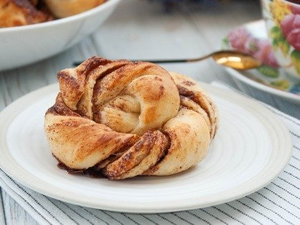
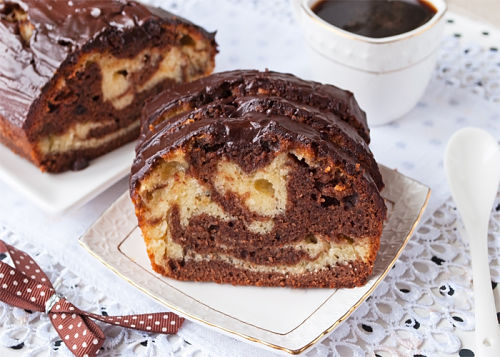
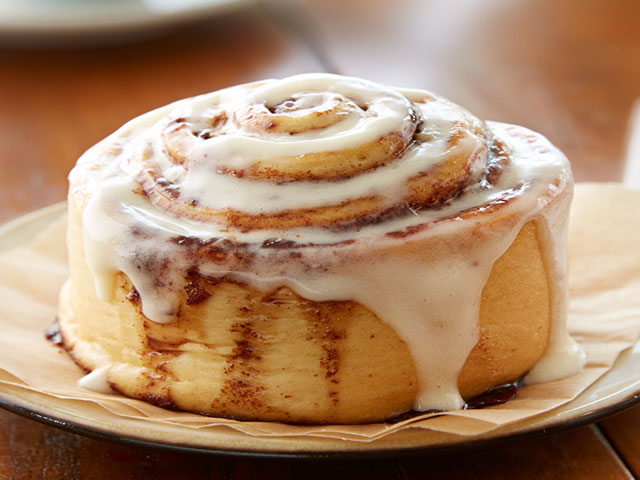

торты/пироги
булочки
печенье
пончики
Булочки - небольшие хлебцы как правило круглой или овальной формы. Этот вид выпечки очень популярен - вкусные булочки все любят с детства: сдобные булочки, сладкие булочки, булочки с маком, с изюмом, с корицей, с повидлом, с кунжутом, с сыром; французские булочки, венские булочки, домашние булочки... Если вы ищите рецепты домашних булочек, рецепты булочек с фото - на нашем сайте рецепты булочек к вашим услугам!
Бисквитный рулет с вишнёвым вареньем Продукты используем самые простые, но при этом бисквитный рулет получается очень вкусным. Нежное сладкое бисквитное тесто и ароматная вишневая начинка с кислинкой - отличное сочетание.
Булочки с корицей и сахаром Мягкие и сладкие домашние булочки из дрожжевого теста. На второй день сохраняют свой вкус, а готовятся без молочных продуктов и яиц.
s  вот рецепт
Кекс "Мраморный" Мраморный кекс - один из тех рецептов, который не надоедает и который с периодичностью хочется повторить.
s  вот рецепт
Французские круассаны Сегодня хочу поделиться рецептом вкусных, хрустящих и очень ароматных круассанов из слоёного дрожжевого теста
Булочки "Синнабон" с корицей и сливочным кремом В меру пряные, с сильным ароматом корицы и имбиря, с нежным сливочным сыром, булочки "Синнабон" обязательно порадуют вас и ваших близких.
s  вот рецепт
шоколад, корица, орехи, глазурь, сироп ит т.д.